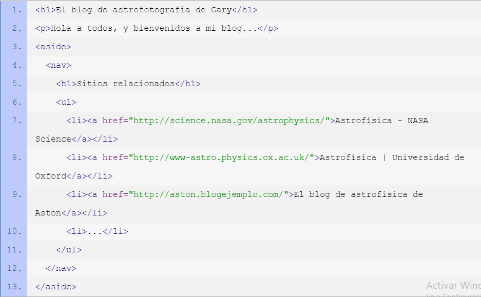
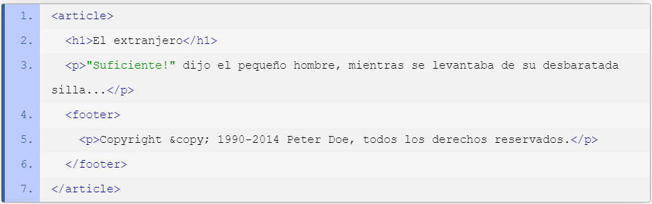

|
|
Contenido en HTML(Section,Aside,Footer,Article) |
|
El elemento aside es un contenedor para información que se considera solo levemente relacionada al documento o la sección en la que es definida. En otras palabras, el contenido del elemento aside debe estar relacionado al contenido circundante, pero no ser completamente necesario para su comprensión. El elemento aside puede ser típicamente encontrado alrededor de enlaces de blogrolls, enlaces al archivo, un glosario, una lista de tweets del autor, o notas, pensamientos o ideas que se le han ocurrido al autor durante la producción del documento. Asimismo, puedes ver ejemplos perfectos de notas al margen en revistas y diarios impresos, donde se provee información adiciona l (pero no crítica) para enriquecer la experiencia del usuario. EjemploEn este ejemplo usaremos al elemento aside para definir una sección de navegación con vínculos a sitios relacionados. Puedes ver como los vínculos están, ciertamente, relacionados al documento. El elemento footer representa al pie de una sección o documento, donde los autores habitualmente colocan firmas, información acerca del autor, información de licencias, documentos relacionados, etc. En muchos casos, los contenidos del pie de un documento son consistentes a lo largo de todo el sitio. Cuando un elemento footer es declarado dentro de un elemento de seccionamiento (como article o section) representa un pie en el ámbito de ese elmento. De lo contrario (cuando pertenece al elemento body) representa un pie para el documento entero. Aunque es una práctica común colocar los pies al final de la página o sección, no es necesario que ocupen ese lugar. Un pie es un pie por lo que representa, no por su ubicación. EjemploAhora, el elemento footer provee información sobre los derechos de copia de la sección que lo contiene (article).  |
Esta informacion fue obtenida de las siguentes paginas:
Anterior - Siguiente